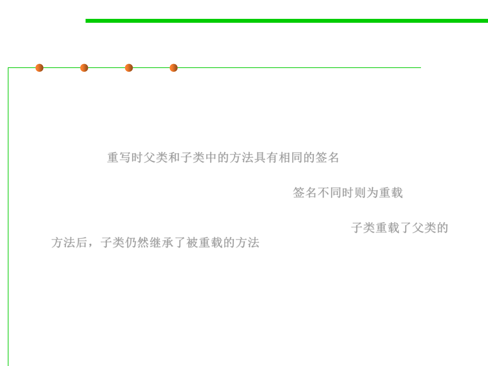

3.4 Object-Oriented Programming (OOP)
Overriding vs. Overloading
▪ Do not confuse overriding a method in a derived class(派生类) with
overloading a method name
– When a method is overridden, the new method definition given in the
derived class has the exact same number and types of parameters as in the
base class 重写时父类和子类中的方法具有相同的签名
– When a method in a derived class has a different signature from the
method in the base class, that is overloading 签名不同时则为重载
– Note that when the derived class overloads the original method, it still
inherits the original method from the base class as well 子类重载了父类的
方法后，子类仍然继承了被重载的方法